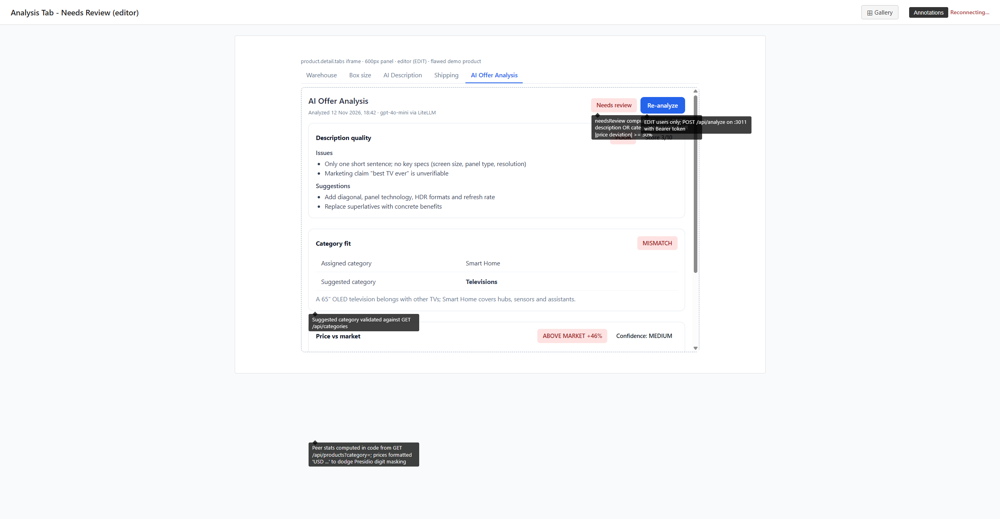
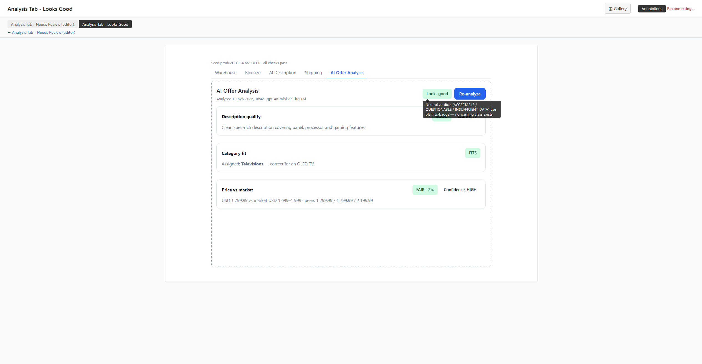
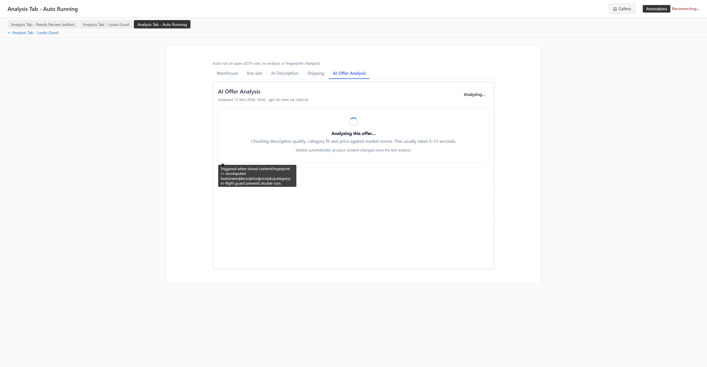
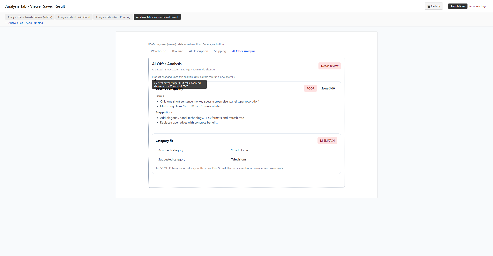
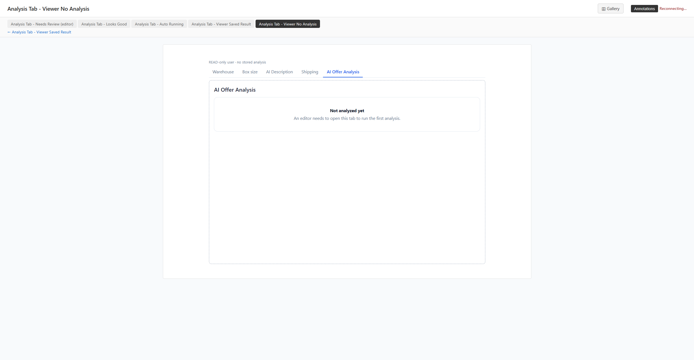
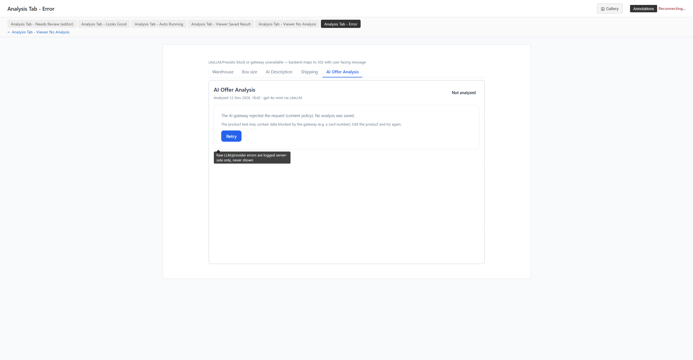
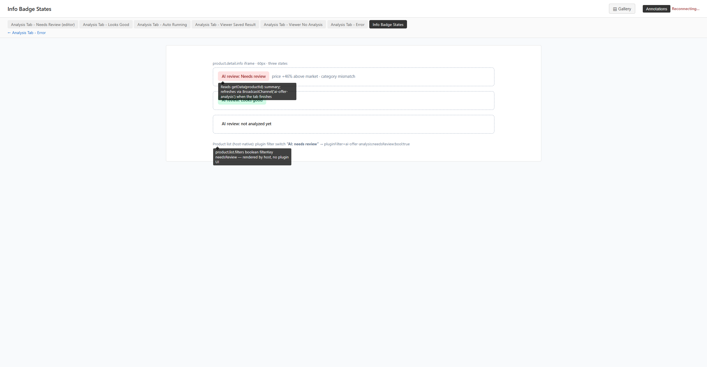

Per-Screen Comparison (mockup left, implementation right)
screen:analysis-tab-needs-review-editor ✓ Match
- Header: title and subtitle left; danger "Needs review" and primary Re-analyze right: matches.
- Section cards (tc-card tc-section, h4 plus badges in a space-between row): match.
- Description POOR plus Score 3/10 with Issues/Suggestions lists; Category MISMATCH table with Assigned and Suggested (bold) rows plus reasoning: match.
- Detailed Metric | USD price table (Skylink) matches. Vistara's price is FAIR, so its section is compact, as the per-section rule requires.
- Spec-sanctioned: assigned-category peers (Smart Home 179.99 / 179.99 / 279.99), en-US grouping, added "Priced as" line (deviation a).


More captures:
screenshots/e2e-54-editor-tab-p16-price-detailed.png
screen:analysis-tab-looks-good ✓ Match
- Header: success "Looks good" plus Re-analyze: matches.
- Compact GOOD summary, "Assigned: Televisions - ..." and the FAIR one-line price: match.
- Peers are the spec-corrected values (Televisions 2: 1,299.99 / 1,749.99 / 2,199.99).
- Product 2 shows the rule-driven variant: a detailed ACCEPTABLE section inside an overall "Looks good".


More captures:
screenshots/e2e-03-editor-auto-run-result.png
screen:analysis-tab-auto-running ✓ Match
- Plain "Analyzing..." badge; Re-analyze visible but disabled: matches.
- Indeterminate labelled <progress> replaces the spinner (per spec); the "Analyzing this offer..." copy and helper line match.
- Reason line "not analyzed yet" variant on auto-run (the mockup shows "content changed"); none on manual Re-analyze, per spec.
- Subtitle only when a previous analysis exists, per the header rule.


More captures:
screenshots/e2e-11-editor-vistara-reanalyze-running.png
screen:analysis-tab-viewer-saved-result ⚠ Minor deviation
- Saved result, same section cards, no Re-analyze button: matches.
- Coverage gap: the stale note "Product changed since this analysis. Only editors can run a new analysis." was not reachable (the analysis was current), so it is unverified.
- Recommendation: check once after an intentional product edit, viewing as viewer.


screen:analysis-tab-viewer-no-analysis ✓ Match
- Title plus a single tc-card "Not analyzed yet" / "An editor needs to open this tab to run the first analysis.": exact copy, no buttons.


screen:analysis-tab-error ✓ Match
- tc-error message, CONTENT_BLOCKED hint (identical copy) and primary Retry: match.
- Header: plain "Not analyzed" without a subtitle, following the spec's superseding rule; header Re-analyze hidden (deviation g).
- The LLM_UNAVAILABLE variant correctly omits the hint. The variant with a previous analysis below the card was not exercised.


More captures:
screenshots/e2e-31-editor-auto-run-error-mocked.png
screen:info-badge-states ✓ Match
- All three states match: danger plus 12px reasons, success, plain "not analyzed yet".
- The host-native "AI: needs review" switch and its pluginFilter query match the annotation.
- Dev-only noise: the Next.js dev indicator overlaps the first badge letters.

More captures:
screenshots/e2e-50-editor-details-badge-p1.pngscreenshots/e2e-01-editor-details-not-analyzed.pngscreenshots/e2e-20-list-filter-needs-review.png
component:verdict-badge ✓ Match
- Danger: POOR, MISMATCH, flagged BELOW MARKET −90%.
- Success: GOOD, FITS, FAIR.
- Plain: ACCEPTABLE, Score, Confidence, Analyzing..., Not analyzed.
- Verdict text is always shown; Unicode minus is used.

component:analysis-section-card ✓ Match
- tc-card tc-section, h4 plus badges in a tc-flex row, then tc-table and the reasoning: matches.
- The DOM uses only tc-plugin / tc-flex / tc-badge(--danger|--success) / tc-primary-button / tc-card / tc-section / tc-table (plus tc-error); no inline hex or rgb; root padding 16px.